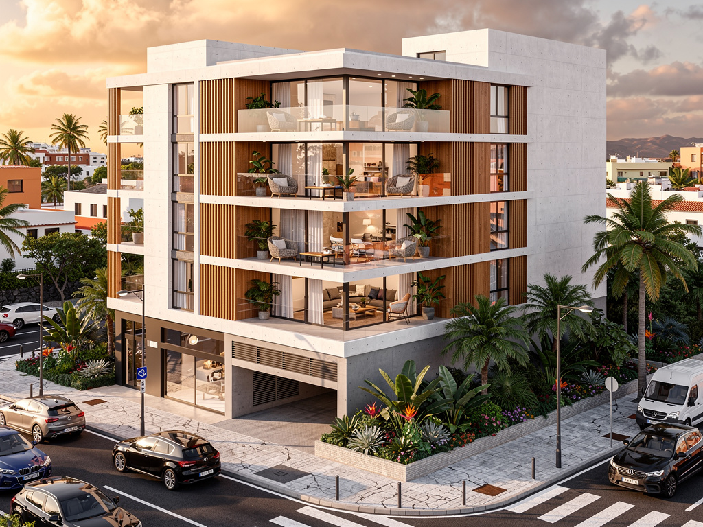
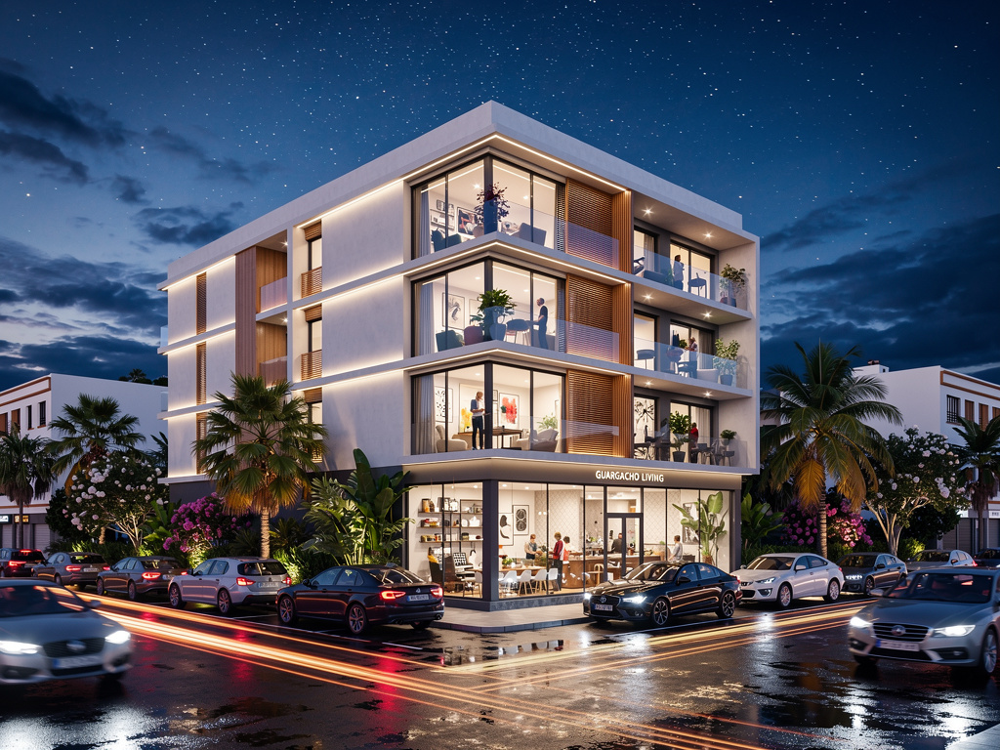
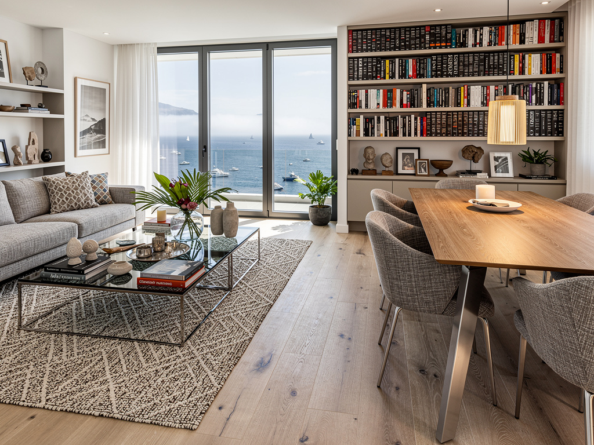
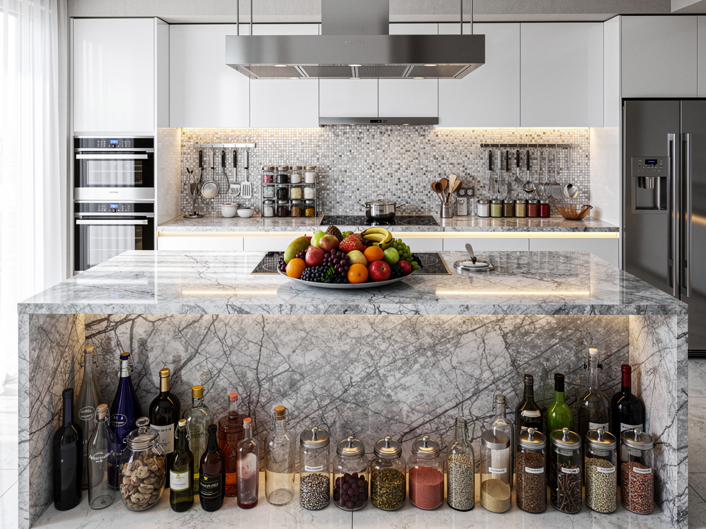
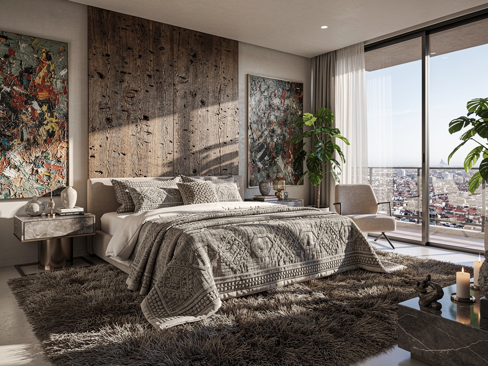
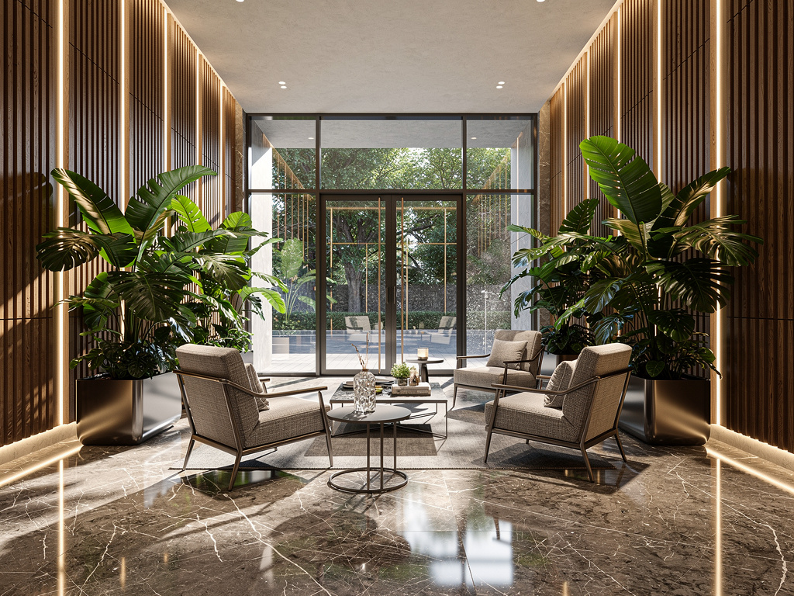
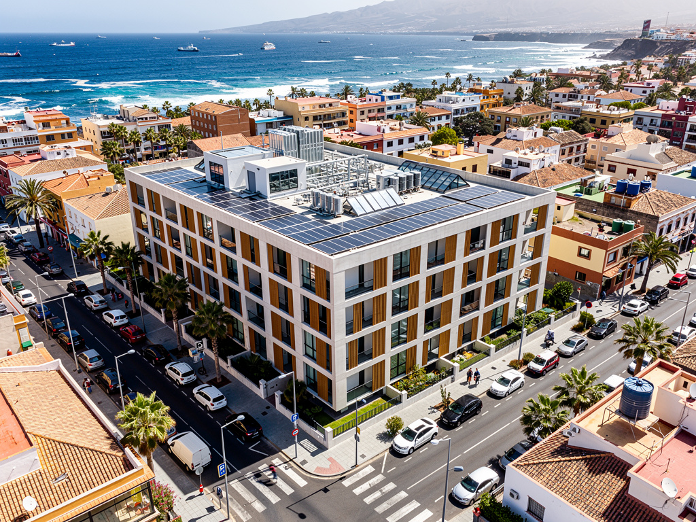
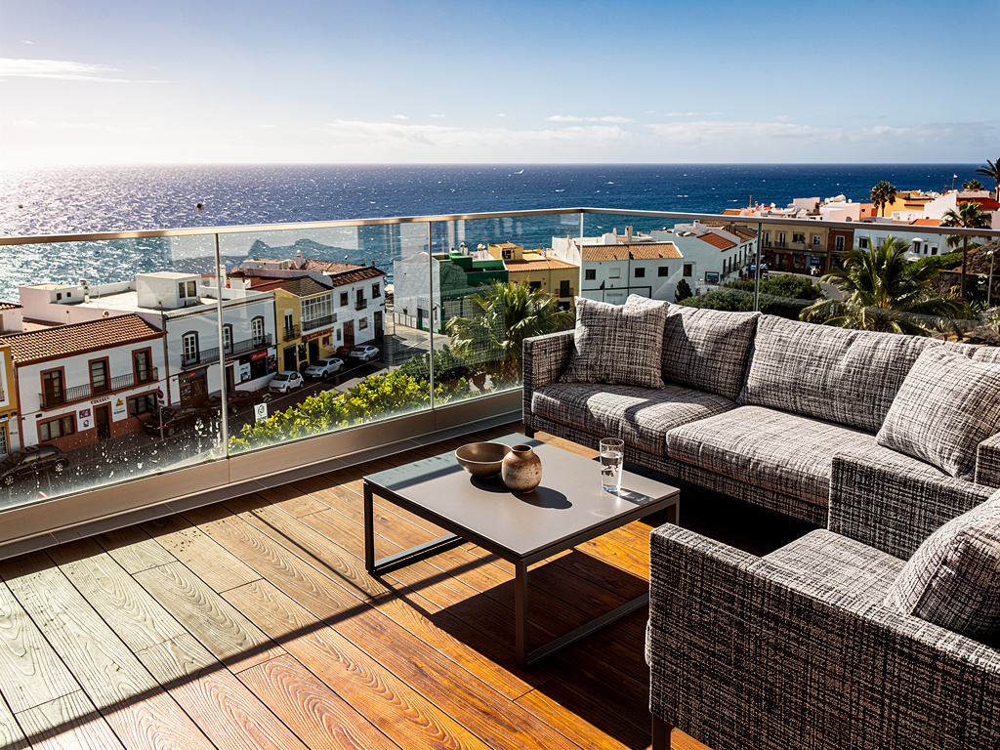

Video Cinematográfico
Master Showcase (Remotion)
Segmentos Generados (First-Last Frame AI)
Transición temporal con iluminación arquitectónica.
Ascenso de dron revelando el entorno de Guargacho.
Entrada fluida desde exterior al interior del piso.
Dolly suave recorriendo la zona de día.
Apertura hacia el exterior con vistas a la costa.
Concepto Visual
Edificio Contemporáneo Canario
El concepto visual para el edificio en la Ctra. General TF-652 busca transmitir modernidad urbana integrada en el entorno del sur de Tenerife. Se enfatizan las líneas limpias, la optimización de la luz natural y el confort interior, destacando el valor añadido de las vistas y la ubicación estratégica en Guargacho. La estética será limpia, atractiva para compradores e inversores, con un toque cálido mediterráneo.
Materiales
- Revestimiento liso blanco brillante
- Detalles en hormigón gris medio
- Carpintería metálica gris antracita
- Toques cálidos en madera clara (interiores)
Atmósfera
- Cielos despejados, luz brillante
- Vida urbana relajada (siluetas humanas)
- Iluminación cálida interior en atardeceres
- Dinamismo en la planta baja comercial
Estilo Arquitectónico
"Volumetría clara de 3 plantas (PB+2), fachadas ordenadas con balcones funcionales. Un diseño que aporta valor estético a una vía principal (TF-652), combinando uso residencial y comercial con elegancia contemporánea."
Plan de Tomas (10 Renders)

Fachada Principal (TF-652)
Vista exterior frontal del edificio desde la carretera general, mostrando la presencia urbana, balcones y acceso al garaje.

Vista Lateral/Trasera
Perspectiva secundaria mostrando la volumetría completa y la relación con las parcelas colindantes.

Salón-Comedor (3 Hab)
Toma amplia del piso familiar más grande (88-102 m²), mostrando amplitud, luz natural y conexión con balcón.

Cocina Abierta (2 Hab)
Vista de la cocina integrada en el salón para el piso medio (60-70 m²). Diseño moderno y funcional.

Dormitorio Principal (3 Hab)
Habitación en suite del piso de 3 dormitorios. Ambiente relajante, armarios empotrados y buena iluminación.
Baño Principal
Diseño del baño tipo, con plato de ducha, mampara, acabados cerámicos neutros y sanitarios modernos.

Estudio / Zonas Comunes
Vista optimizada del apartamento de 1 dormitorio o zonas comunes, destacando el aprovechamiento del espacio.
Local Comercial (PB)
Vista exterior a pie de calle focalizada en el local de ~95 m², con escaparate acristalado e iluminación invitadora.

Vista Aérea del Entorno
Plano cenital oblicuo mostrando la ubicación del edificio en Guargacho, accesos y la proximidad a la costa/TF-1 al fondo.

Detalle Terraza Sur
Close-up de uno de los balcones/terrazas de las plantas superiores, mostrando el cerramiento de cristal y vistas.
Plan de Producción
| Prioridad | Fase / Tarea | Especificaciones Técnicas | Estado |
|---|---|---|---|
| ALTA | R01, R08, R03 (Hero Shots) | Resolución 4K. Ideales para portada de dossier comercial y cartel de obra. | Modelando |
| MEDIA | R04, R05, R07 (Interiores Tipo) | Resolución 3K. Enfoque en tipologías (1, 2, 3 habs) para ficha web. | En cola |
| MEDIA | R09 (Aérea Contexto) | Composición con foto de dron real del entorno + match-moving 3D. | Buscando Base |
| BAJA | R02, R06, R10 (Detalles/Secundarios) | Resolución HD. Material de apoyo para memoria de calidades. | En cola |